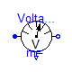
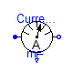
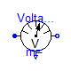
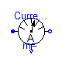
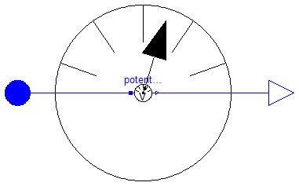
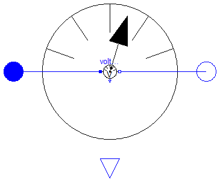

This package contains multiphase potential, voltage, and current sensors.
| Name | Description |
|---|---|
| PotentialSensor | Multiphase potential sensor |
| VoltageSensor | Multiphase voltage sensor |
| CurrentSensor | Multiphase current sensor |
Modelica.Electrical.MultiPhase.Sensors.PotentialSensor
Contains m potential sensors (Modelica.Electrical.Analog.Sensors.PotentialSensor), thus measuring the m potentials phi[m] of the m pins of plug_p.
| Name | Default | Description |
|---|---|---|
| m | 3 | number of phases |
model PotentialSensor "Multiphase potential sensor"
extends Modelica.Icons.RotationalSensor;
parameter Integer m(final min=1) = 3 "number of phases";
Interfaces.PositivePlug plug_p(
m);
Modelica.Blocks.Interfaces.RealOutput phi[
m](
redeclare type SignalType = Modelica.SIunits.ElectricPotential)
"Absolute voltage potential as output signal";
Modelica.Electrical.Analog.Sensors.PotentialSensor potentialSensor[
m];
equation
connect(potentialSensor.p, plug_p.pin);
connect(potentialSensor.phi, phi);
end PotentialSensor;

Contains m voltage sensors (Modelica.Electrical.Analog.Sensors.VoltageSensor), thus measuring the m potential differences v[m] between the m pins of plug_p and plug_n.
| Name | Default | Description |
|---|---|---|
| m | 3 | number of phases |
model VoltageSensor "Multiphase voltage sensor"
extends Modelica.Icons.RotationalSensor;
parameter Integer m(final min=1) = 3 "number of phases";
Interfaces.PositivePlug plug_p(
final m=m);
Interfaces.NegativePlug plug_n(
final m=m);
Modelica.Blocks.Interfaces.RealOutput v[
m](
redeclare type SignalType = Modelica.SIunits.Voltage)
"Voltage between pin p and n (= p.v - n.v) as output signal";
Modelica.Electrical.Analog.Sensors.VoltageSensor voltageSensor[
m];
equation
connect(voltageSensor.n, plug_n.pin);
connect(voltageSensor.p, plug_p.pin);
connect(voltageSensor.v, v);
end VoltageSensor;
Contains m current sensors (Modelica.Electrical.Analog.Sensors.CurrentSensor), thus measuring the m currents i[m] flowing from the m pins of plug_p to the m pins of plug_n.
| Name | Default | Description |
|---|---|---|
| m | 3 | number of phases |
model CurrentSensor "Multiphase current sensor"
extends Modelica.Icons.RotationalSensor;
parameter Integer m(final min=1) = 3 "number of phases";
Interfaces.PositivePlug plug_p(
final m=m);
Interfaces.NegativePlug plug_n(
final m=m);
Modelica.Blocks.Interfaces.RealOutput i[
m](
redeclare type SignalType = Modelica.SIunits.Current)
"current in the branch from p to n as output signal";
Modelica.Electrical.Analog.Sensors.CurrentSensor currentSensor[
m];
equation
connect(plug_p.pin, currentSensor.p);
connect(currentSensor.n, plug_n.pin);
connect(currentSensor.i, i);
end CurrentSensor;